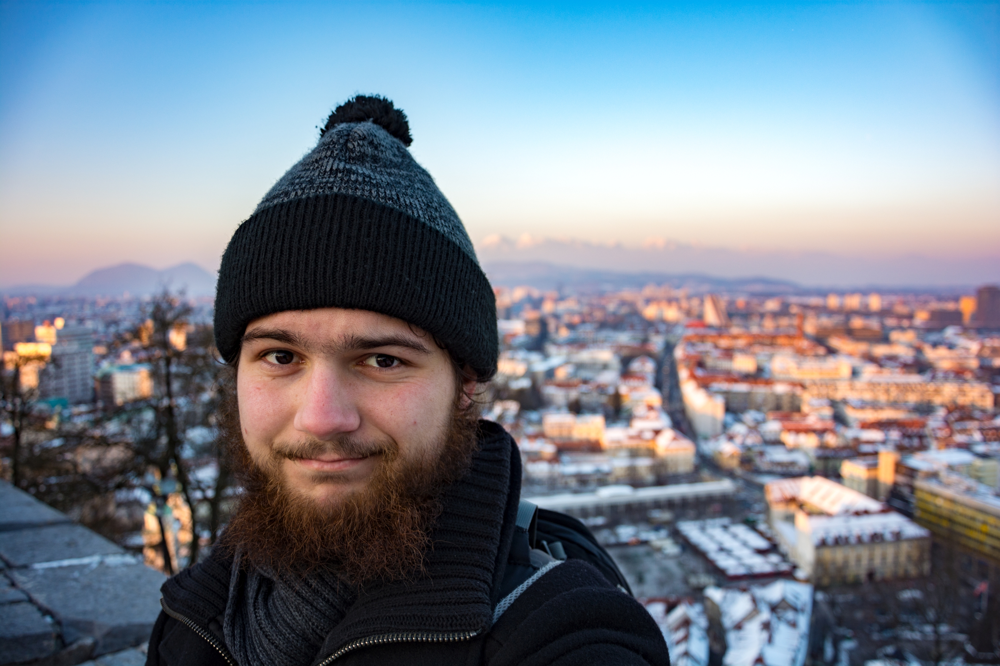
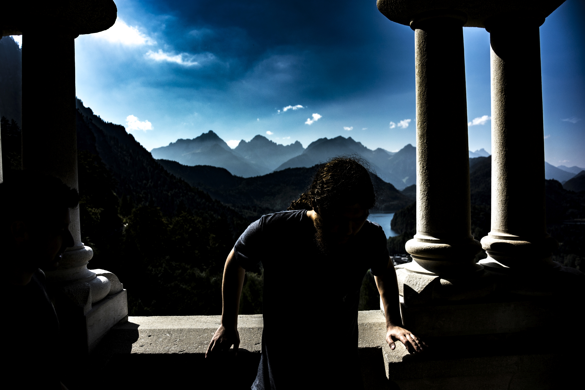

Welcome!

Aspection
My areas of expertise encompass: Graphic Design, Video Montage and Web Development. Of late, I synergically apply knowledges, to name a few: Human-Computer Interaction, User Experience and Information Visualization in order to deliver the most accommodating solutions. Furthermore, I have a fair knowledge of Database Systems, Programming, Physical Computing and Environmental Development. One hobby is persistently pursued throughout the years was running a detailed, extensive blog, recently enriched by compelling photography that I post-process and capture on my own.
Retrospection

Introspection
Unfortunately, significant changes in my life tended to hamper with my qualities, at times, in combination with constant, high stress levels and a lack of proper schedule, created a void that eaten and mashed up the best of me, leaving flattened abilities and knowledges I found at hardship employing in my works. Throughout most of my life, I found difficulties in reaching stability and a perspective. As of late, the latter has radically improved and in case of the former, this website is intended to introduce a total overhaul in regards to its perception.

Futurospection
This semester I took a B2.2 German Course. Did a leap over B2.1. I also took 6 lectures, out of which 5 are driven in German. They include: Writing and Presenting a Research Paper, Producing a Film, getting a grip on the following programming languages and libraries: Python, C++, Cocos2D, PyGame, JavaFX, D3.js, OpenGL, according projects will be made. On top of which I am required to acquire a vast range of theoretical knowledges, to name a few: Interaction Design followed by Human-Computer Interaction.
Afterwards? Last semester in Sydney, potentially an immense project that I will be taking upon. Could try pursuing a year of honors or go straight into a master's program. The question is, how do I see myself at the age of 24? Currently I may operate fluently in two languages. In three years I would like five. Today I may seldom program. In three years, I would like to acquire the entire spectrum of high and low level programming skills. But before all, I would like to be able to consistently apply all of my skills, the qualities of which I plan on improving on multiple vectors.
Please take a look at my future (including current) projects on the navigation bar included below.


Reinspection
I assume that I established myself a middle ground by binding technical and creative, ultimately becoming a designer.
Thereof I managed to acquire a broad selection of knowledges which on top was complemented with writing skills and a digital touch left upon.
The quality of works is of utmost importance and while the process follows or even matches, it is the circumstances in which the projects were raised that breathes and showcases its life. The inspirations, longings, design choices, thinking methods, all the processes, motivations. I did my best to foreclose all of the aforementioned and even more at the utmost of all the angles.
Please, take note: I worked on this website alone. Some scripts and solutions were used as recommended by google or stackoverflow, yet, it took me around a month of heavy research, recovering most of the materials I ever was envolved with. Constructing the website alone, its user experience and backend design took me a significant amount of time, especially fixing all the glitches and introducing workarounds at times made the entire experience as futile as it gets. Eventually, the effort somehow did match my expectations and just then I realised: all of the projects that I included must have taken thousands of hours, uni-related and personal works altogether. Count thrice for the ones I dropped and planned on getting back to eventually. It is my desire, that in terms of quality, the projects may speak for themselves. Yet, who am I to judge?


Circumspection
I eventually managed to scrape off most of the materials that I have ever built, raised, created and cultivated. In the process, I recalled, finally, ablebodied to put together the crucial parts and a compelling, close to its true nature - a backstory. Every one and each, I believe, has or, at the very least, deserves a matching story. Extra materials will be provided, that may shed some light onto the more creative ways that were applied throughout the process of a variety of projects. Consider it, a tiny bit of makeup. Which evokes the tasty details. Sprinkled with insights.
Are you interested in my website's evolution? Please find attached the changes subpage at the bottom right corner. In case if you were trying to reach me, please use the Contact subpage in the top right corner. What about the cultural background I was raised in? You may find just as much in the top right corner. Embraced by myself and the magic that comes with. Alternatively, you may take a look at my vertical timeline, at the bottom right corner. By this time, most of the content ought to be in place.
I do hope that your stay on my website will be a pleasant one.